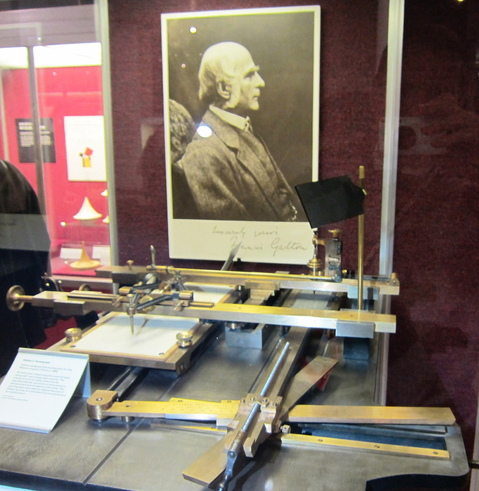
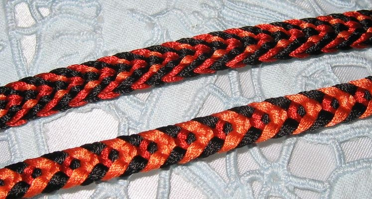

第18回
光の前に人形をかざすと、スクリーンに影の姿が映る。
FaizAttariqi（2019年、影絵芝居ワヤン・クリの上演）／CC BY-SA 4.0／Wikimedia Commons（横長に切り出した）
行列 $A$ は平面や空間を「引き伸ばす」写像でもある。そのとき面積や体積が何倍になるかを、符号（向き）つきの1つの数にしたものが行列式 $\det A$ である。式 $ad-bc$ を暗記するのではなく、面積の当たり前の性質3つから式を導き、それが「正則か（逆行列があるか）」の判定に、積の公式に、逆行列とクラメルの公式につながるところまでを、記号を省かずに1行ずつ追う。
第1回から続く約束どおり、新しい記号は緑色の枠（記号）で「①読み方 ②日本語での意味 ③省略していない書き方 ④どこで出会うか」を書く。この回の省略は「$n$ 個のベクトルの関数」を「正方行列の関数」にして、さらに「$|\ \ |$」で囲むだけにするものなので、1.4 の省略の段階で S0 から S3 まで並べる。
行列式は、定義を先に与えて性質を証明する書き方（式を天下り的に置く）が多く、「なぜこんな式か」が見えにくい。そこでこの回は逆に、面積という身近なものの性質を先に決め、そこから式を導く順に進める。高校で習った 2×2 の $ad-bc$ や、第17回の行基本変形も、仮定せずに一度は書く（覚えている人は飛ばしてよい）。式変形は1行に1操作だけ進め、理由を右（または下）に書く。
なお、固有値（第20回）、LU分解と計算量の議論（第50回）は、この回では予告だけにする。
最初に、この回で新しく説明する記号と、前の回で説明済みの記号を分けて並べる。右の列の「→」で説明のある場所へ飛べる。
| 記号 | 読み方 | ざっくりした意味 | 説明 |
|---|---|---|---|
| $\det A$、$|A|$（行列式） | ディターミナント・エー、エー・の・ぎょうれつしき | 正方行列 $A$ が面積・体積を何倍にするかを、向きの符号つきで表す1つの実数 | →1.4 |
| $\sigma$、$S_n$（置換） | シグマ、エス・エヌ | $1,\dots,n$ の並べ替え／その全体（$n!$ 個） | →3.1 |
| $\operatorname{sgn}\sigma$（置換の符号） | サイン・シグマ（またはサイグナム・シグマ） | 並べ替えが偶数回の入れ替えなら $+1$、奇数回なら $-1$ | →3.2 |
| 上三角行列、下三角行列 | じょうさんかくぎょうれつ | 対角線より下（上）の成分がすべて0の正方行列 | →4.2 |
| $M_{ij}$（小行列）、$C_{ij}$（余因子） | エム・アイ・ジェイ、シー・アイ・ジェイ | 第 $i$ 行と第 $j$ 列を取り除いた行列／それの行列式に符号 $(-1)^{i+j}$ をつけたもの | →4.4、→4.4 |
| $\operatorname{adj}A$（余因子行列） | アジョイント・エー | 余因子を並べて転置した行列。$A^{-1}$ の分子になる | →5.3 |
| 記号 | 意味 | 初出 |
|---|---|---|
| $=$、$:=$ | 等しい／左の名前を右の式で決める | 第1回、第1回 |
| $\Rightarrow$、$\Leftrightarrow$、$\forall$、$\exists$、$\in$ | ならば／同値／すべての／存在する／要素である | 第2回、第2回、第2回、第2回、第2回 |
| 写像、全単射、$\operatorname{sgn}x$（実数の符号） | 対応の規則／1対1かつ上への写像／正なら$+1$・負なら$-1$ | 第3回、第3回、第3回 |
| $\displaystyle\sum$、$\displaystyle\prod$、$n!$ | 総和／総乗／階乗 | 第4回、第4回、第4回 |
| 太字 $\boldsymbol x$、$A_{ij}$、$I$、$A^{\mathsf T}$、$\boldsymbol a\times\boldsymbol b$、$\boldsymbol a\cdot\boldsymbol b$ | ベクトル／$i$ 行 $j$ 列の成分／単位行列／転置／外積／内積 | 第5回、第5回、第5回、第5回、第5回、第5回 |
| ヤコビアン | 変数変換で面積が何倍になるか | 第13回 |
| 一次結合、一次独立、基底、標準基底 $\boldsymbol e_i$ | 定数倍の和／冗長がない／座標軸の役目をする組／各成分だけ1 | 第15回、第15回、第15回、第15回 |
| $A\boldsymbol x$、線形写像、$AB$、$A^{-1}$ | 列の一次結合／写像／写像の合成／逆の写像 | 第16回、第16回、第16回、第16回 |
| 行基本変形 $R_i\leftrightarrow R_j$ ほか、主成分、$\operatorname{rank}A$、$\ker A$ | 解を変えない3つの操作／各行の最初の0でない成分／主成分の個数／$A\boldsymbol x=\boldsymbol 0$ の解全体 | 第17回、第17回、第17回、第17回 |
PHOTO 1｜現実

腕の長さの比で、図を決まった倍率に写し取る器具、パントグラフである。
フランシス・ゴルトンのパントグラフ（サイエンス・ミュージアム蔵。Andrew Davidson 撮影）／CC BY-SA 3.0／Wikimedia Commons（縮小した）
MITATE 1｜見立て
水牛の革を切り抜いて彩色した、影絵芝居の人形である。
ワヤン・クリの人形（国立世界文化博物館蔵、2021年撮影）／CC BY-SA 4.0／Wikimedia Commons（縮小した）
第16回で、行列 $A$ は「平面（や空間）の点を動かす写像」だと分かった。$A\boldsymbol x$ は $A$ の列の一次結合である（第16回）。そこで次の問いを立てる。写像 $\boldsymbol x\mapsto A\boldsymbol x$ は、図形の面積を何倍にするのか。
最小の具体例から始める。$A=\begin{pmatrix}3&1\\1&2\end{pmatrix}$ とする。列は $\boldsymbol a_1=\begin{pmatrix}3\\1\end{pmatrix}$、$\boldsymbol a_2=\begin{pmatrix}1\\2\end{pmatrix}$。単位正方形の4つの頂点 $(0,0),(1,0),(0,1),(1,1)$ が、$A$ でどこへ動くかを計算する。
① $A\boldsymbol e_1=1\cdot\boldsymbol a_1+0\cdot\boldsymbol a_2=\boldsymbol a_1=(3,1)$。
② $A\boldsymbol e_2=\boldsymbol a_2=(1,2)$。
③ $A\begin{pmatrix}1\\1\end{pmatrix}=\boldsymbol a_1+\boldsymbol a_2=(4,3)$。
④ $A\begin{pmatrix}0\\0\end{pmatrix}=\begin{pmatrix}0\\0\end{pmatrix}$。
つまり単位正方形は、列ベクトル $\boldsymbol a_1,\boldsymbol a_2$ を2辺とする平行四辺形に移る。図1.1 を見る。
単位正方形の面積は $1$ である。平行四辺形の面積が $S$ なら、この写像は面積を $S$ 倍にしたことになる。次の節で、$S$ を計算する。
一般に $\boldsymbol a_1=\begin{pmatrix}a\\c\end{pmatrix}$、$\boldsymbol a_2=\begin{pmatrix}b\\d\end{pmatrix}$ とする（$A=\begin{pmatrix}a&b\\c&d\end{pmatrix}$。列が $\boldsymbol a_1,\boldsymbol a_2$ なので、$b$ は第2列の上の成分である点に注意）。まず、すべての成分が正で、$\boldsymbol a_2$ が $\boldsymbol a_1$ の左回り（反時計回り）側にある場合に、図形を切り貼りして面積を求める。
平行四辺形をぴったり囲む大きな長方形を考える。横の長さは $a+b$、縦の長さは $c+d$ である。長方形の面積から、4隅の余りを引く。
① 長方形の面積：$(a+b)(c+d)$。
② 下と上にある2つの三角形（底辺 $a$、高さ $c$）：合わせて $2\cdot\frac12ac=ac$。
③ 左と右にある2つの三角形（底辺 $b$、高さ $d$）：合わせて $2\cdot\frac12bd=bd$。
④ 左上と右下の2つの長方形（横 $b$、縦 $c$）：合わせて $2bc$。
⑤ 平行四辺形の面積 $=(a+b)(c+d)-ac-bd-2bc$。
⑥ $(a+b)(c+d)=ac+ad+bc+bd$ と展開する。
⑦ $ac+ad+bc+bd-ac-bd-2bc=ad-bc$。
よって面積は $ad-bc$。図1.2 は数値 $a=3,c=1,b=1,d=2$ で確かめたもの（$12-3-2-2=5=3\cdot2-1\cdot1$）である。
これで、1.1 の写像は面積を $5$ 倍にすることが分かった。
1.2 では「$\boldsymbol a_2$ が $\boldsymbol a_1$ の左回り側にある」という仮定を置いた。仮定をはずして、列の順番を入れ替えた行列 $A'=\begin{pmatrix}1&3\\2&1\end{pmatrix}$（列が $\boldsymbol a_2,\boldsymbol a_1$ の順）の $ad-bc$ を計算する。
① $A'$ では $a=1,b=3,c=2,d=1$。
② $ad-bc=1\cdot1-3\cdot2=-5$。
平行四辺形そのものは同じ形なので、面積（長さの量）は $5$ である。しかし式 $ad-bc$ は $-5$ を返した。この符号は「第1の辺から第2の辺へ、左回りに回るか、右回りに回るか」を表している。左回りなら $+$、右回りなら $-$ と決めるのが、行列式である。図1.3 を見る。
符号をつけておくと、「列を入れ替えると符号が変わる」という性質が自然に得られ、後の計算（2節）がうまくいく。面積だけ（常に正）を知りたいときは、絶対値 $|ad-bc|$ をとればよい。
1.2〜1.3 で調べた「2本の列ベクトルが作る符号つき面積」に名前をつける。そして、名前を縮めていくときに何を省くのかを、1段ずつ並べておく。
| 段 | 書き方（例：1.1 の行列） | この段で省いたもの | 省いても誤解が起きない理由 |
|---|---|---|---|
| S0 | $\det(\boldsymbol a_1,\boldsymbol a_2)$、$\boldsymbol a_1=\begin{pmatrix}3\\1\end{pmatrix}$、$\boldsymbol a_2=\begin{pmatrix}1\\2\end{pmatrix}$ （2本のベクトルを引数にとる関数） | （なし） | — |
| S1 | $\det\begin{pmatrix}3&1\\1&2\end{pmatrix}$ | ベクトルを1本ずつ列挙するコンマと名前 $\boldsymbol a_1,\boldsymbol a_2$。列を並べた表の形で渡す | 表の第 $j$ 列が $\boldsymbol a_j$ なので、引数の順序は表の列の順序と同じ。順序が分かれば名前は要らない |
| S2 | $\det A$、ただし $A=\begin{pmatrix}3&1\\1&2\end{pmatrix}$ | 表の中身を $A$ という名前にまとめ、関数の括弧を省いた（$\sin x$ と同じ流儀） | $A$ が何かは前に書いてあるので、中身に戻れる |
| S3 | $|A|$、または表を縦線で囲んだ $\begin{vmatrix}3&1\\1&2\end{vmatrix}$ | 文字 $\det$ を縦線に置き換えた | 縦線の意味（絶対値・ノルム・行列式）は中身で決まる：中身が数なら絶対値、ベクトルならノルム、正方行列なら行列式。ただし紛らわしいので本書は $\det A$ を主に使う |
S3 の落とし穴：$|A|$ は絶対値ではない。行列式は負にもなる（1.3）。$\begin{vmatrix}1&3\\2&1\end{vmatrix}=-5$ であって $5$ ではない。面積を言いたいときは $|\det A|$ と、縦線を2重に使う。
①読み方：$\det A$ は「ディターミナント・エー」または「デット・エー」、$|A|$ は「エーの行列式」。日本語は「ぎょうれつしき」。$\det$ は英語 determinant（決定するもの）の略。
②日本語での意味：正方行列 $A$（$n$ 行 $n$ 列）が表す写像 $\boldsymbol x\mapsto A\boldsymbol x$ が、$n$ 次元の体積（2次元なら面積）を何倍にするかを、向きの符号つきで表す1つの実数。$A$ の列ベクトル $\boldsymbol a_1,\dots,\boldsymbol a_n$ を辺とする平行四辺形・平行六面体の符号つき面積・体積と同じである（1.1）。
③省略していない書き方：$A\in\mathbb R^{n\times n}$ に対し、$\det A\in\mathbb R$。具体的には $$ n=1:\ \det\begin{pmatrix}a\end{pmatrix}=a,\qquad n=2:\ \det\begin{pmatrix}a&b\\c&d\end{pmatrix}=ad-bc $$ （$n=2$ は 1.2〜1.3 で導いた）。$n=3$ は 1.5、一般の $n$ は3.3 のライプニッツの公式で書く。正方行列でないとき（$m\neq n$）は定義されない。
④どこで出会うか：逆行列の有無の判定（5節）、固有値を求める特性方程式 $\det(A-\lambda I)=0$（第20回）、変数変換のヤコビアン（第13回）、外積・スカラー三重積（第5回、1.5）、連立方程式のクラメルの公式（5.4）。
最小の具体例：$\det\begin{pmatrix}3&1\\1&2\end{pmatrix}=3\cdot2-1\cdot1=5$。1.1 の写像は面積を $5$ 倍にする。
「行列式は行列の各成分に関する、ある式にすぎず、面積とは別物」と思うのは誤り。$ad-bc$ は成分から面積を計算する式として生まれた。式だけを覚えると、$3\times3$ 以降の符号（$+,-$ の並び）がなぜそうなのか分からなくなる。この回は、その符号を面積・体積の性質から導く。
また、「$\det(A+B)=\det A+\det B$」は誤り。たとえば $A=B=I_2$（2×2 の単位行列）で、$\det(A+B)=\det(2I)=4$、$\det A+\det B=2$。行列式は足し算と相性が悪く、積と相性がよい（5.1）。
3本の列ベクトル $\boldsymbol a_1,\boldsymbol a_2,\boldsymbol a_3$ が作る平行六面体の体積を考える。具体例として、 $$ A=\begin{pmatrix}2&1&0\\1&3&1\\0&1&2\end{pmatrix},\quad \boldsymbol a_1=\begin{pmatrix}2\\1\\0\end{pmatrix},\ \boldsymbol a_2=\begin{pmatrix}1\\3\\1\end{pmatrix},\ \boldsymbol a_3=\begin{pmatrix}0\\1\\2\end{pmatrix} $$ とする。図1.5 に平行六面体を示す。
体積は「底面積×高さ」である。底面を $\boldsymbol a_1,\boldsymbol a_2$ が作る平行四辺形とすると、底面積は外積 $\boldsymbol a_1\times\boldsymbol a_2$ の大きさ $\|\boldsymbol a_1\times\boldsymbol a_2\|$ で、高さは $\boldsymbol a_3$ を外積の向き（底面に垂直な向き）に射影した長さである（第5回の外積、内積）。したがって符号つきの体積は $$ \boldsymbol a_3\cdot(\boldsymbol a_1\times\boldsymbol a_2) $$ （スカラー三重積）である。具体例で計算する。
① $\boldsymbol a_1\times\boldsymbol a_2=\begin{pmatrix}1\cdot1-0\cdot3\\0\cdot1-2\cdot1\\2\cdot3-1\cdot1\end{pmatrix}=\begin{pmatrix}1\\-2\\5\end{pmatrix}$。
② $\boldsymbol a_3\cdot(\boldsymbol a_1\times\boldsymbol a_2)=0\cdot1+1\cdot(-2)+2\cdot5=8$。
この $8$ を成分の公式にしたものが、次のサラスの公式である。$A=\begin{pmatrix}a&b&c\\d&e&f\\g&h&i\end{pmatrix}$ について、 $$ \det A=aei+bfg+cdh-ceg-bdi-afh $$ （左上から右下へ向かう3本の斜めの積を足し、右上から左下へ向かう3本の斜めの積を引く）。具体例では $2\cdot3\cdot2+1\cdot1\cdot0+0\cdot1\cdot1-0\cdot3\cdot0-1\cdot1\cdot2-2\cdot1\cdot1=12+0+0-0-2-2=8$。スカラー三重積の $8$ と一致した。図1.6 を見る。
サラスの公式は $3\times3$ 専用である。$4\times4$ で同じ「斜めの積」を8本作っても、正しい値にならない（$4\times4$ の項は $24$ 個ある。3.3）。$4\times4$ 以上は、3節の公式か4節の計算法を使う。
1節の式は 2×2 と 3×3 だけである。$n\times n$ の式をどう作るかが問題になる。ここで発想を変える。「式を探す」のではなく、面積・体積が必ず持っている性質を先に書き出し、その性質を満たすものはただ1つしかないことを示す。そうすれば、式は「必要だから出てくるもの」になる。2×2 の面積 $S(\boldsymbol a_1,\boldsymbol a_2)$ について、図で確かめられる性質を書く。
(性質1) 1辺を $c$ 倍すれば面積が $c$ 倍。$\boldsymbol a_1$ を2倍にすると平行四辺形は底辺が2倍になり、高さは同じなので面積は2倍（図2.1）。
(性質2) 1辺が2つのベクトルの和なら、面積は2つの面積の和。底辺 $\boldsymbol a_1$ を固定して、もう1辺を $\boldsymbol u+\boldsymbol v$ にすると、高さは $\boldsymbol u$ の高さと $\boldsymbol v$ の高さの和になる（図2.2）。
性質1と2をあわせて、多重線形性（各辺について線形）という。
(性質3) ある辺に、別の辺の定数倍を足しても面積は変わらない。底辺 $\boldsymbol a_1$ を固定して $\boldsymbol a_2$ を $\boldsymbol a_2+t\boldsymbol a_1$ にすると、頂点は底辺と平行に滑るだけで、高さは変わらない（図2.3）。
(性質4) 同じ辺を2回使えば、面積は0。$\boldsymbol a_1=\boldsymbol a_2$ なら平行四辺形はつぶれて線分になる（図2.4）。
実は性質3は、性質2・性質4から導ける（2.4）ので、独立な要請ではない。最後に、(性質5) 単位正方形（辺が $\boldsymbol e_1,\boldsymbol e_2$）の面積は1。
正方行列 $A=(\boldsymbol a_1\ \boldsymbol a_2\ \cdots\ \boldsymbol a_n)$（列が $\boldsymbol a_j$）の実数値関数 $f(\boldsymbol a_1,\dots,\boldsymbol a_n)$ が次の3つを満たすとする。
このとき $f$ はただ1つに決まる。それを行列式 $\det$ と定義する。（存在と一意性の証明は3節で行う。）
(D1) の「(…, $\boldsymbol u+\boldsymbol v$, …)」は、$j$ 番目だけが $\boldsymbol u+\boldsymbol v$ で、ほかの列は同じ、という意味である。「…」は第1回の省略記号。
D1〜D3 だけを使って、$\det\begin{pmatrix}a&b\\c&d\end{pmatrix}$ を計算する。列は $\boldsymbol a_1=a\boldsymbol e_1+c\boldsymbol e_2$、$\boldsymbol a_2=b\boldsymbol e_1+d\boldsymbol e_2$（標準基底の一次結合。第15回）。
① $\det(a\boldsymbol e_1+c\boldsymbol e_2,\ \boldsymbol a_2)=a\det(\boldsymbol e_1,\boldsymbol a_2)+c\det(\boldsymbol e_2,\boldsymbol a_2)$。
② $\det(\boldsymbol e_1,\boldsymbol a_2)=b\det(\boldsymbol e_1,\boldsymbol e_1)+d\det(\boldsymbol e_1,\boldsymbol e_2)$。
③ $\det(\boldsymbol e_2,\boldsymbol a_2)=b\det(\boldsymbol e_2,\boldsymbol e_1)+d\det(\boldsymbol e_2,\boldsymbol e_2)$。
④ $\det(\boldsymbol e_1,\boldsymbol e_1)=0$、$\det(\boldsymbol e_2,\boldsymbol e_2)=0$。
⑤ $\det(\boldsymbol e_1,\boldsymbol e_2)=1$（D3）。$\det(\boldsymbol e_2,\boldsymbol e_1)=-1$。
⑥ まとめると $\det=a\,(b\cdot0+d\cdot1)+c\,(b\cdot(-1)+d\cdot0)=ad-bc$。
面積の図形的な切り貼り（1.2）とは別の道で、同じ式 $ad-bc$ にたどり着いた。符号 $-bc$ の「$-$」は、$\det(\boldsymbol e_2,\boldsymbol e_1)=-1$ から来ている。
D1〜D3 を満たす $f$（行列式）について、次が成り立つ。
(E1)：入れ替える2つの列を $\boldsymbol a,\boldsymbol b$ と書き、他の列は固定して省略する。
① $f(\boldsymbol a+\boldsymbol b,\ \boldsymbol a+\boldsymbol b)=0$。
② 左辺を第1の位置の和で分ける：$f(\boldsymbol a,\ \boldsymbol a+\boldsymbol b)+f(\boldsymbol b,\ \boldsymbol a+\boldsymbol b)=0$。
③ さらに第2の位置の和で分ける：$f(\boldsymbol a,\boldsymbol a)+f(\boldsymbol a,\boldsymbol b)+f(\boldsymbol b,\boldsymbol a)+f(\boldsymbol b,\boldsymbol b)=0$。
④ $f(\boldsymbol a,\boldsymbol a)=0$、$f(\boldsymbol b,\boldsymbol b)=0$ なので $f(\boldsymbol a,\boldsymbol b)+f(\boldsymbol b,\boldsymbol a)=0$。
⑤ よって $f(\boldsymbol a,\boldsymbol b)=-f(\boldsymbol b,\boldsymbol a)$。□
(E2)：
① $f(\dots,\boldsymbol a_j+t\boldsymbol a_k,\dots,\boldsymbol a_k,\dots)=f(\dots,\boldsymbol a_j,\dots,\boldsymbol a_k,\dots)+t\,f(\dots,\boldsymbol a_k,\dots,\boldsymbol a_k,\dots)$。
② 右辺の第2項は、第 $j$ 列と第 $k$ 列がどちらも $\boldsymbol a_k$ なので $0$（D2）。□
(E3)：$\boldsymbol a_k=\sum_{l\neq k}c_l\boldsymbol a_l$ とする。
① $f(\dots,\boldsymbol a_k,\dots)=\sum_{l\neq k}c_l\,f(\dots,\boldsymbol a_l,\dots)$。
② 右辺の各 $f$ では、第 $k$ 列の位置と第 $l$ 列の位置がどちらも $\boldsymbol a_l$ なので $0$（D2）。よって $f=0$。□
E2 は「せん断（滑らせる変形）は面積を変えない」（性質3、図2.3）、E3 は「辺が1本余計なら平行四辺形がつぶれる」（性質4の拡張）の代数的な言い直しである。E1 が 1.3 の向きの反転にあたる。
第17回の行基本変形（第17回）と見比べておく。(E1)↔入れ替え $R_i\leftrightarrow R_j$、(E2)↔倍を足す $R_i\leftarrow R_i+cR_j$、D1 の定数倍↔$R_i\leftarrow cR_i$。ただし E1〜E3 は列についての言明である。行についても同じことが言えるのは、3.5 の $\det A^{\mathsf T}=\det A$ による。
PHOTO 2｜現実
14と15だけを入れ替えた盤は、どう動かしても元の並びに戻せない。
サム・ロイド『14-15パズルの国』（1914年の本の挿絵。Ed Pegg Jr のスキャン）／Public domain／Wikimedia Commons（縮小した）
MITATE 2｜見立て

糸を一本ずつ交差させて、並べ替えながら編んでいく。
Ccassan（2008年、組紐）／Public domain／Wikimedia Commons（縮小した）
2.2 の計算を、$n\times n$ に広げる。列 $\boldsymbol a_j=\sum_{i=1}^{n}A_{ij}\boldsymbol e_i$（第 $j$ 列の第 $i$ 成分が $A_{ij}$）を $f$ に入れ、D1 を第1列から第 $n$ 列まで順に使うと、 $$ f(\boldsymbol a_1,\dots,\boldsymbol a_n)=\sum_{i_1=1}^{n}\sum_{i_2=1}^{n}\cdots\sum_{i_n=1}^{n}A_{i_1 1}A_{i_2 2}\cdots A_{i_n n}\ f(\boldsymbol e_{i_1},\boldsymbol e_{i_2},\dots,\boldsymbol e_{i_n}) $$ となる（$n^n$ 個の項。2×2 では $2^2=4$ 個の項で、2.2 の ①〜③ にあたる）。D2 により、$i_1,\dots,i_n$ のうち同じ値が2つあれば、その項は0になる。残るのは、$i_1,\dots,i_n$ が $1,\dots,n$ の並べ替えになっている項である。この並べ替えに名前をつける。
①読み方：$\sigma$ は「シグマ」（小文字。和の記号 $\sum$ とは別の文字）。$S_n$ は「エス・エヌ」、「$n$ 次の対称群」と呼ぶ本もある。
②日本語での意味：$1,2,\dots,n$ を並べ替える規則。「$1$ 番目の場所には $\sigma(1)$ を置く、$2$ 番目には $\sigma(2)$ を置く、…」という対応。
③省略していない書き方：$\sigma\colon\{1,\dots,n\}\to\{1,\dots,n\}$ が全単射（第3回：1対1かつ上への写像）であるもの。$\sigma$ を表すとき、値を順に並べて $(\sigma(1),\sigma(2),\dots,\sigma(n))$ と書く。$S_n$ はそのような $\sigma$ の全体の集合：$S_n:=\{\sigma\mid\sigma\text{ は }\{1,\dots,n\}\text{ の置換}\}$。要素の個数は $n!$ 個（第4回の階乗：1番目の置き場所の候補が $n$ 通り、2番目が $n-1$ 通り、…）。
④どこで出会うか：行列式の定義（3.3）、対称群（量子力学で同種粒子の入れ替え）、並べ替えの数え上げ。
最小の具体例：$n=3$ のとき、$S_3$ の要素は $3!=6$ 個で、$(1,2,3)$、$(1,3,2)$、$(2,1,3)$、$(2,3,1)$、$(3,1,2)$、$(3,2,1)$。たとえば $\sigma=(2,3,1)$ は $\sigma(1)=2$、$\sigma(2)=3$、$\sigma(3)=1$ を表す。
D1 の展開で残る項は、置換 $\sigma$ ごとに $i_1=\sigma(1),\dots,i_n=\sigma(n)$ とした $$ A_{\sigma(1)1}\,A_{\sigma(2)2}\cdots A_{\sigma(n)n}\ f(\boldsymbol e_{\sigma(1)},\dots,\boldsymbol e_{\sigma(n)})=\prod_{j=1}^{n}A_{\sigma(j)j}\ \cdot f(\boldsymbol e_{\sigma(1)},\dots,\boldsymbol e_{\sigma(n)}) $$ の形の $n!$ 個である（$\prod$ は第4回の総乗）。この積は「各列から1個ずつ、どの行も重複しないように成分を選んで掛ける」ことを表している。図3.1は $n=3$ の6通りで、選ばれた成分に丸をつけたものである。
残る問題は $f(\boldsymbol e_{\sigma(1)},\dots,\boldsymbol e_{\sigma(n)})$ の値である。標準基底を並べ替えただけなので、D3 の $f(\boldsymbol e_1,\dots,\boldsymbol e_n)=1$ から、E1（列を入れ替えるたびに符号が変わる）で $+1$ か $-1$ になる。その符号を、並べ替えの形から読み出す方法を作る。
①読み方：$\operatorname{sgn}\sigma$ は「サイン・シグマ」または「サイグナム・シグマ」（signature または sign の略）。
②日本語での意味：並べ替えの結果、大小の順が逆転している組の個数（転倒数）が偶数なら $+1$、奇数なら $-1$。
③省略していない書き方：$\sigma\in S_n$ に対し、転倒数を $\operatorname{inv}(\sigma):=\#\{(j,k)\mid 1\le j\lt k\le n,\ \sigma(j)\gt\sigma(k)\}$（「$j$ 番目が $k$ 番目より前にあるのに、値は $j$ 番目のほうが大きい」組の数。$\#$ は集合の要素の個数）とし、 $$ \operatorname{sgn}\sigma:=(-1)^{\operatorname{inv}(\sigma)} $$ と定める。
④どこで出会うか：ライプニッツの公式（3.3）、量子力学の反対称化（フェルミ粒子）、外積の成分 $\varepsilon_{ijk}$（第27回）。
第3回の $\operatorname{sgn}x$ は実数 $x$ の符号（正なら $+1$、負なら $-1$、0なら0。第3回）。この回の $\operatorname{sgn}\sigma$ は置換 $\sigma$ の符号で、常に $\pm1$。同じ文字だが、引数が実数か置換かで区別する。
最小の具体例：$\sigma=(2,3,1)$ の転倒数を数える。組 $(j,k)$ は $(1,2),(1,3),(2,3)$ の3つ。
① $(1,2)$：$\sigma(1)=2$、$\sigma(2)=3$。$2\gt3$ か？ いいえ。
② $(1,3)$：$\sigma(1)=2$、$\sigma(3)=1$。$2\gt1$ か？ はい。
③ $(2,3)$：$\sigma(2)=3$、$\sigma(3)=1$。$3\gt1$ か？ はい。
④ $\operatorname{inv}(\sigma)=2$、$\operatorname{sgn}\sigma=(-1)^2=+1$。
図3.2は、$\sigma=(3,1,4,2)$（$n=4$）の転倒数を、線の交差の数として数えたものである。上の列 $1,2,3,4$ から下の列へ線を引くと、交差する線の組の数が転倒数になる。
$\sigma\in S_n$ の並び $(\sigma(1),\dots,\sigma(n))$ のうち、2つの位置の値を入れ替えてできる置換を $\sigma'$ とすると、$\operatorname{sgn}\sigma'=-\operatorname{sgn}\sigma$。
① まず隣り合う位置 $j,j+1$ の入れ替えを考える。転倒数を数える組 $(l,m)$ のうち、位置の組 $\{j,j+1\}$ は大小が反転するので、転倒数が1つ増えるか1つ減る。
② $\{j,j+1\}$ 以外の位置 $l$ と、$j$・$j+1$ の組については、入れ替えても「$l$ より左にある2つの値」「右にある2つの値」の集合は変わらない。したがって、$l$ と $j$、$l$ と $j+1$ の2つの組の転倒の個数の合計は変わらない。
③ よって隣り合う入れ替えで転倒数はちょうど1だけ変わり、$(-1)^{\operatorname{inv}}$ の符号が変わる。
④ 一般の位置 $j\lt k$ の入れ替えは、距離 $d=k-j$ として、$j$ の値を右へ $d$ 回の隣り合う入れ替えで $k$ まで運び、$k$ にあった値を左へ $d-1$ 回で $j$ まで運ぶ、計 $2d-1$ 回（奇数回）の隣り合う入れ替えでできる。
⑤ よって $\operatorname{sgn}\sigma'=-\operatorname{sgn}\sigma$。□
恒等置換 $(1,2,\dots,n)$ の転倒数は0なので符号は $+1$。したがって、「$s$ 回の2つの値の入れ替えで $\sigma$ に到達できる」なら $\operatorname{sgn}\sigma=(-1)^s$ である。これが $f(\boldsymbol e_{\sigma(1)},\dots,\boldsymbol e_{\sigma(n)})$ の値と対応する。
3.1 の展開に戻る。$f(\boldsymbol e_{\sigma(1)},\dots,\boldsymbol e_{\sigma(n)})$ は、$(\boldsymbol e_1,\dots,\boldsymbol e_n)$ から出発して、列を入れ替えるたびに E1 で符号が変わり、$s$ 回の入れ替えで $\sigma$ に至るなら $(-1)^s\,f(\boldsymbol e_1,\dots,\boldsymbol e_n)=\operatorname{sgn}\sigma\cdot1$ となる（D3 と補題3.1）。したがって次の式が得られる。
D1〜D3 を満たす $f$ があれば、$A\in\mathbb R^{n\times n}$ に対して $$ \det A=\sum_{\sigma\in S_n}\operatorname{sgn}\sigma\ \prod_{j=1}^{n}A_{\sigma(j)\,j} $$ である。
各部分を読む。$\displaystyle\sum_{\sigma\in S_n}$ は「$S_n$ のすべての置換 $\sigma$ についての和」（$n!$ 項）。各項は、各列から1個ずつ、どの行も重複しないように成分を選んで掛け、置換の符号 $\operatorname{sgn}\sigma$ をつけたもの。
確かめ ($n=2$)：$S_2=\{(1,2),(2,1)\}$。$\sigma=(1,2)$：$\operatorname{sgn}=+1$、積は $A_{11}A_{22}$。$\sigma=(2,1)$：転倒1つ、$\operatorname{sgn}=-1$、積は $A_{21}A_{12}$。よって $\det A=A_{11}A_{22}-A_{21}A_{12}=ad-bc$ ✓。
確かめ ($n=3$)：6個の置換と、その転倒数・符号・積を表にする。
| $\sigma$ | 転倒数 | $\operatorname{sgn}\sigma$ | 積 $A_{\sigma(1)1}A_{\sigma(2)2}A_{\sigma(3)3}$ | $A=\begin{pmatrix}a&b&c\\d&e&f\\g&h&i\end{pmatrix}$ のとき |
|---|---|---|---|---|
| $(1,2,3)$ | 0 | $+1$ | $A_{11}A_{22}A_{33}$ | $+aei$ |
| $(1,3,2)$ | 1 | $-1$ | $A_{11}A_{32}A_{23}$ | $-ahf=-afh$ |
| $(2,1,3)$ | 1 | $-1$ | $A_{21}A_{12}A_{33}$ | $-dbi=-bdi$ |
| $(2,3,1)$ | 2 | $+1$ | $A_{21}A_{32}A_{13}$ | $+dhc=+cdh$ |
| $(3,1,2)$ | 2 | $+1$ | $A_{31}A_{12}A_{23}$ | $+gbf=+bfg$ |
| $(3,2,1)$ | 3 | $-1$ | $A_{31}A_{22}A_{13}$ | $-gec=-ceg$ |
6項の和は $aei+bfg+cdh-ceg-bdi-afh$ で、1.5 のサラスの公式と一致した。サラスの公式の符号の並びは、置換の符号から来ている。
$n=4$ では $4!=24$ 項、$n=10$ では $10!=3628800$ 項になる。式の形は美しいが、そのままの計算は現実的でない。実際の計算は4節で行う。
定理3.2 は「D1〜D3 を満たす $f$ があれば、その値はこの式になる」（一意性）を示した。逆に、この式で $\det$ を定義したとき D1〜D3 を満たす（存在）ことを確かめる。
$\det A:=\sum_{\sigma\in S_n}\operatorname{sgn}\sigma\prod_{j}A_{\sigma(j)j}$ は D1・D2・D3 を満たす。
(D3)：$A=I$ のとき、$A_{\sigma(j)j}=\delta_{\sigma(j)j}$（第4回のクロネッカーのデルタ）。積が0でないのは、すべての $j$ で $\sigma(j)=j$、つまり恒等置換のときだけで、その項は $(+1)\cdot1=1$。よって $\det I=1$。
(D1)：各項 $\prod_jA_{\sigma(j)j}$ には、第 $j$ 列の成分がちょうど1個だけ含まれる。よって第 $j$ 列について、定数倍と和に関して線形（各項が線形で、線形な項の和も線形）。
(D2)：第 $j$ 列と第 $k$ 列（$j\neq k$）が等しい、つまり全ての $i$ で $A_{ij}=A_{ik}$ とする。置換 $\sigma$ に対し、$\sigma(j)$ と $\sigma(k)$ の値を入れ替えた置換を $\sigma'$ とする。
① $\prod_lA_{\sigma'(l)l}$ のうち、$l=j,k$ 以外の因子は $\sigma$ の場合と同じ。
② $l=j,k$ の因子：$A_{\sigma'(j)j}A_{\sigma'(k)k}=A_{\sigma(k)j}A_{\sigma(j)k}$。
③ $A_{\sigma(k)j}=A_{\sigma(k)k}$、$A_{\sigma(j)k}=A_{\sigma(j)j}$ なので、②は $A_{\sigma(k)k}A_{\sigma(j)j}$ に等しい。
④ ゆえに積は $\sigma$ と $\sigma'$ で等しく、符号は $\operatorname{sgn}\sigma'=-\operatorname{sgn}\sigma$（補題3.1）。2つの項は打ち消し合う。
⑤ すべての項が組になって消えるので、$\det A=0$。□
これで、「D1〜D3 を満たす関数は存在し、ただ1つで、ライプニッツの公式で与えられる」ことが言えた。2節の定義 D1〜D3 は筋が通っている。
$g(\boldsymbol a_1,\dots,\boldsymbol a_n)$ が D1・D2 を満たす（D3 は仮定しない）なら、$g(A)=g(I)\cdot\det A$。
3.1〜3.3 の議論は D3 を使うまでは $g$ にそのまま当てはまり、$g(\boldsymbol e_{\sigma(1)},\dots,\boldsymbol e_{\sigma(n)})=\operatorname{sgn}\sigma\cdot g(\boldsymbol e_1,\dots,\boldsymbol e_n)=\operatorname{sgn}\sigma\cdot g(I)$（E1 を $g$ に使う。E1 は D1・D2 だけから導いた）。よって $g(A)=\sum_\sigma\operatorname{sgn}\sigma\prod_jA_{\sigma(j)j}\cdot g(I)=g(I)\det A$。□
定理3.4 は 5.1 で $\det(AB)=\det A\det B$ を示すときに使う。
$\det A^{\mathsf T}=\det A$。（$A^{\mathsf T}$ は転置。第5回。$(A^{\mathsf T})_{ij}=A_{ji}$。）
① $\det A^{\mathsf T}=\sum_\sigma\operatorname{sgn}\sigma\prod_{j}(A^{\mathsf T})_{\sigma(j)j}=\sum_\sigma\operatorname{sgn}\sigma\prod_jA_{j\,\sigma(j)}$。
② 積 $\prod_jA_{j\sigma(j)}$ の掛ける順を変える。$i:=\sigma(j)$ とおくと $j=\sigma^{-1}(i)$（$\sigma^{-1}$ は逆の写像）で、$j$ が $1,\dots,n$ を動くとき $i$ も $1,\dots,n$ を動く（$\sigma$ は全単射）。
③ よって $\prod_jA_{j\sigma(j)}=\prod_iA_{\sigma^{-1}(i)\,i}$。
④ $\operatorname{sgn}\sigma^{-1}=\operatorname{sgn}\sigma$：$\sigma$ の転倒の組 $(j,k)$（$j\lt k$ かつ $\sigma(j)\gt\sigma(k)$）に、$\sigma^{-1}$ の組 $(\sigma(k),\sigma(j))$ を対応させる。$\sigma(k)\lt\sigma(j)$ で、$\sigma^{-1}(\sigma(k))=k\gt j=\sigma^{-1}(\sigma(j))$ だから、これは $\sigma^{-1}$ の転倒の組である。この対応は逆向きにもできるので、転倒数は等しい。
⑤ $\sigma\mapsto\sigma^{-1}$ は $S_n$ から $S_n$ への全単射なので、$\sum_\sigma$ を $\sum_{\sigma^{-1}}$ に置き換えてよい。③④より $\det A^{\mathsf T}=\sum_{\tau\in S_n}\operatorname{sgn}\tau\prod_iA_{\tau(i)i}=\det A$。 □
この結果、「列についての性質は、すべて行についても成り立つ」。D1・D2・E1〜E3 の「列」を「行」に読み替えてよい。行基本変形（第17回）と行列式の関係が 4.1 で得られる。
第17回の3つの行基本変形（第17回）を $A$ に施したとき、$\det$ はどう変わるか。D1・E1・E2 を行に読み替える（3.5）と、次の表になる。
| 行基本変形 | $\det$ の変化 | 根拠 |
|---|---|---|
| (i) $R_i\leftrightarrow R_j$（入れ替え） | $-1$ 倍 | E1 の行版 |
| (ii) $R_i\leftarrow cR_i$（$c\neq0$ 倍） | $c$ 倍 | D1 の行版 |
| (iii) $R_i\leftarrow R_i+cR_j$（別の行の倍を足す） | 変わらない | E2 の行版 |
(ii) で行 $i$ を $c$ 倍した行列を $A'$ とすると $\det A'=c\det A$。したがって元の行列式は $\det A=\frac1c\det A'$。掃き出しの途中で行を $c$ 倍したら、最後に $\frac1c$ を掛けて戻す必要がある。一番安全なのは、(ii) をなるべく使わず、(i) と (iii) だけで進めることである。
①読み方：「じょうさんかくぎょうれつ」「かさんかくぎょうれつ」。
②日本語での意味：対角線より下の成分がすべて0（上三角）、対角線より上の成分がすべて0（下三角）の正方行列。
③省略していない書き方：上三角行列とは、$A\in\mathbb R^{n\times n}$ で、$i\gt j$ ならば $A_{ij}=0$ となるもの（$\forall i,j,\ i\gt j\Rightarrow A_{ij}=0$）。下三角行列は $i\lt j$ ならば $A_{ij}=0$。
④どこで出会うか：掃き出し法の途中（行階段形は上三角）、LU分解（第50回）、固有値（第20回、三角行列の固有値は対角成分）。
上三角行列（または下三角行列）の行列式は、対角成分の積：$\det A=A_{11}A_{22}\cdots A_{nn}$。
① ライプニッツの公式（定理3.2）の項 $\prod_jA_{\sigma(j)j}$ が0でないためには、すべての $j$ で $A_{\sigma(j)j}\neq0$、つまり $\sigma(j)\le j$ でなければならない。
② $j=1$：$\sigma(1)\le1$ より $\sigma(1)=1$。
③ $j=2$：$\sigma(2)\le2$、かつ $\sigma(2)\neq\sigma(1)=1$（全単射だから）。よって $\sigma(2)=2$。
④ $j=3$：$\sigma(3)\le3$ で、すでに使った $1,2$ は選べない。よって $\sigma(3)=3$。以下、帰納的にすべての $j$ で $\sigma(j)=j$。
⑤ 残るのは恒等置換だけで、その符号は $+1$、積は $A_{11}\cdots A_{nn}$。□（下三角は転置 $A^{\mathsf T}$ が上三角で、$\det A^{\mathsf T}=\det A$（定理3.5）からも出る。）
手順：行基本変形 (i)(iii) で上三角行列にし、対角成分の積を取り、入れ替えた回数だけ符号を反転する。第17回の例 2.3 の係数行列で実行する。$A=\begin{pmatrix}1&1&1\\2&1&-1\\1&-1&2\end{pmatrix}$。
① $R_2\leftarrow R_2-2R_1$：$(2,1,-1)-2(1,1,1)=(0,-1,-3)$。
② $R_3\leftarrow R_3-R_1$：$(1,-1,2)-(1,1,1)=(0,-2,1)$。
③ $R_3\leftarrow R_3-2R_2$：$(0,-2,1)-2(0,-1,-3)=(0,0,7)$。
④ 上三角行列 $\begin{pmatrix}1&1&1\\0&-1&-3\\0&0&7\end{pmatrix}$。対角成分の積は $1\cdot(-1)\cdot7=-7$。
⑤ 入れ替えは0回、(ii) も使っていないので $\det A=-7$。
サラスの公式で確かめる。$A=\begin{pmatrix}a&b&c\\d&e&f\\g&h&i\end{pmatrix}$ と対応づけて（$A$ の成分を文字 $a$〜$i$ で呼ぶ）$a=1,b=1,c=1,d=2,e=1,f=-1,g=1,h=-1,i=2$。
⑥ $aei=1\cdot1\cdot2=2$、$bfg=1\cdot(-1)\cdot1=-1$、$cdh=1\cdot2\cdot(-1)=-2$。和は $2-1-2=-1$。
⑦ $ceg=1\cdot1\cdot1=1$、$bdi=1\cdot2\cdot2=4$、$afh=1\cdot(-1)\cdot(-1)=1$。和は $1+4+1=6$。
⑧ $\det A=-1-6=-7$ ✓。掃き出しの結果と一致した。この値 $-7$ は、第17回の例 2.3 で最後に $R_3\leftarrow\frac17R_3$ と割った「7」と、符号 $-1$ を合わせたものである（主成分 $1,\ -1,\ 7$ の積）。
行を入れ替える例。$B=\begin{pmatrix}0&2&1\\1&1&3\\2&3&0\end{pmatrix}$。第1行の最初の成分が0なので、そのままでは第1行を使って下の行の第1列を消せない。先に行を入れ替える。
① $R_1\leftrightarrow R_2$：$\begin{pmatrix}1&1&3\\0&2&1\\2&3&0\end{pmatrix}$。入れ替えを1回行ったので、$\det B=-\det(\text{この行列})$。
② $R_3\leftarrow R_3-2R_1$：$(2,3,0)-2(1,1,3)=(0,1,-6)$。
③ $R_3\leftarrow R_3-\frac12R_2$：$(0,1,-6)-\frac12(0,2,1)=(0,0,-\frac{13}2)$。
④ 上三角の対角成分の積：$1\cdot2\cdot(-\frac{13}2)=-13$。
⑤ 入れ替えを1回したので符号を反転して $\det B=-(-13)=13$。
零が多い行列では、別の方法が速いことがある。まず記号を決める。
①読み方：「エム・アイ・ジェイ」。「しょうぎょうれつ」。
②日本語での意味：$A$ から第 $i$ 行と第 $j$ 列を取り除いて残った $(n-1)\times(n-1)$ 行列。
③省略していない書き方：$A\in\mathbb R^{n\times n}$ に対し、$M_{ij}$ は、$A_{kl}$（$k\neq i$ かつ $l\neq j$）を元の順序のまま並べた行列。この回だけの名前で、一般の行列を表す $M$ と混同しないこと。
④どこで出会うか：余因子展開、余因子行列（5.3）。
①読み方：「シー・アイ・ジェイ」。「よいんし」。
②日本語での意味：$(i,j)$ 成分を取り除いた小行列の行列式に、符号 $(-1)^{i+j}$ をつけた数。符号は市松模様で $+,-$ と交互に並ぶ（図4.5）。
③省略していない書き方：$C_{ij}:=(-1)^{i+j}\det M_{ij}$。
④どこで出会うか：余因子展開、余因子行列、クラメルの公式（5.4）。
図4.4 は、$(i,j)$ 成分を取り除く様子（第 $i$ 行と第 $j$ 列を消して残りを詰める）である。
最小の具体例：$A=\begin{pmatrix}1&2&3\\4&5&6\\7&8&10\end{pmatrix}$ の $(2,3)$ 成分。第2行・第3列を取り除いた $M_{23}=\begin{pmatrix}1&2\\7&8\end{pmatrix}$、$\det M_{23}=8-14=-6$。$C_{23}=(-1)^{2+3}(-6)=(-1)(-6)=6$。
$A\in\mathbb R^{n\times n}$ について、任意の列 $j$ で $$ \det A=\sum_{i=1}^{n}A_{ij}C_{ij}\qquad(\text{第 }j\text{ 列に沿った展開}) $$ 任意の行 $i$ で $$ \det A=\sum_{j=1}^{n}A_{ij}C_{ij}\qquad(\text{第 }i\text{ 行に沿った展開}) $$ が成り立つ。
(第1列、列に沿った展開)：ライプニッツの公式（定理3.2）の項を、$\sigma(1)=i$ のものにまとめる。
① $\sigma(1)=i$ のとき、積は $A_{i1}\cdot\prod_{j=2}^{n}A_{\sigma(j)j}$。残りの因子の行番号は $\{1,\dots,n\}\setminus\{i\}$ のすべてを1回ずつ取る。
② これは、$M_{i1}$（第 $i$ 行と第1列を取り除いた行列）から、各列に1個ずつ重複なく成分を取る積と同じ。行番号を $1,\dots,n-1$ に振り直した置換を $\sigma'\in S_{n-1}$ とする。
③ 符号の関係：$\operatorname{inv}(\sigma)=(i-1)+\operatorname{inv}(\sigma')$。
④ よって $\operatorname{sgn}\sigma=(-1)^{i-1}\operatorname{sgn}\sigma'$。したがって $\sigma(1)=i$ の項の和は $A_{i1}(-1)^{i-1}\sum_{\sigma'}\operatorname{sgn}\sigma'\prod A'_{\sigma'(j)j}=A_{i1}(-1)^{i-1}\det M_{i1}$。
⑤ $i=1,\dots,n$ について足すと $\det A=\sum_iA_{i1}C_{i1}$。
(第 $j$ 列の展開)：第 $j$ 列を、隣の列と $j-1$ 回入れ替えて最左へ動かす。E1 により $\det$ は $(-1)^{j-1}$ 倍。他の列の順序は保たれるので、新しい第1列の成分 $A_{ij}$ に対する小行列は、元の $M_{ij}$ に等しい。第1列の展開を使うと $\det A=(-1)^{j-1}\sum_iA_{ij}(-1)^{i+1}\det M_{ij}=\sum_iA_{ij}(-1)^{i+j}\det M_{ij}$。
(行に沿った展開)：転置 $A^{\mathsf T}$ に列の展開を使い、$\det A^{\mathsf T}=\det A$（定理3.5）、$(A^{\mathsf T})$ の第 $i$ 列が $A$ の第 $i$ 行なので、行の展開になる。□
2×2 で確かめる：第1列に沿った展開は $\det\begin{pmatrix}a&b\\c&d\end{pmatrix}=a\cdot(+d)+c\cdot(-b)=ad-bc$ ✓（$C_{11}=(+1)\det(d)=d$、$C_{21}=(-1)\det(b)=-b$）。
例（4×4）：$A=\begin{pmatrix}1&0&2&0\\3&1&0&2\\0&2&1&0\\1&0&0&1\end{pmatrix}$。第2列には0が2つあるので、第2列に沿って展開する。第2列は $(0,1,2,0)^{\mathsf T}$。
① $A_{22}=1$：$M_{22}$ は第2行・第2列を取り除く。$M_{22}=\begin{pmatrix}1&2&0\\0&1&0\\1&0&1\end{pmatrix}$、$\det M_{22}=1$（サラス：$1\cdot1\cdot1+0+0-0-0-2\cdot0\cdot1=1$）。$C_{22}=(+1)\cdot1=1$。
② $A_{32}=2$：$M_{32}$ は第3行・第2列を取り除く。$M_{32}=\begin{pmatrix}1&2&0\\3&0&2\\1&0&1\end{pmatrix}$、$\det M_{32}=1(0-0)-2(3-2)+0=-2$。$C_{32}=(-1)^{3+2}(-2)=2$。
③ $\det A=0\cdot C_{12}+1\cdot1+2\cdot2+0\cdot C_{42}=5$。
(1) 符号 $(-1)^{i+j}$ を忘れるのが最多の誤り。$(2,1)$ や $(1,2)$ では $-$ が付く。図4.5 の市松模様で確かめる。(2) 展開の列（行）を途中で替えない。第 $j$ 列の $A_{ij}$ と、別の列の $C_{ik}$ を組み合わせて足すと 0 になる（5.3 で使う）。
動機：行列の積 $AB$ は「$B$ で動かしてから $A$ で動かす」合成写像（第16回）。$B$ が面積を $\det B$ 倍、$A$ が $\det A$ 倍にするなら、合成は $\det A\cdot\det B$ 倍にするはずである。図5.1 を見る。
$A,B\in\mathbb R^{n\times n}$ について $\det(AB)=\det A\cdot\det B$。
$B$ の列を $\boldsymbol b_1,\dots,\boldsymbol b_n$ とし、$g(\boldsymbol b_1,\dots,\boldsymbol b_n):=\det(AB)$ を、$A$ を固定した $B$ の関数と見る。
① $AB$ の第 $j$ 列は $A\boldsymbol b_j$。
② $g$ は D1 を満たす：$A(c\boldsymbol b_j)=c\,A\boldsymbol b_j$、$A(\boldsymbol u+\boldsymbol v)=A\boldsymbol u+A\boldsymbol v$ で、$AB$ の第 $j$ 列が $\boldsymbol b_j$ について線形に動くから、$\det$ の D1 により $g$ も $\boldsymbol b_j$ について線形。
③ $g$ は D2 を満たす：$\boldsymbol b_j=\boldsymbol b_k$ なら $A\boldsymbol b_j=A\boldsymbol b_k$ で、$AB$ の同じ列が2つなので $\det(AB)=0$。
④ 定理3.4 により $g(B)=g(I)\det B$。ここで $g(I)=\det(AI)=\det A$。
⑤ よって $\det(AB)=\det A\cdot\det B$。□
(1) $\det(AB)=\det(BA)$ は成り立つ（どちらも $\det A\det B$ で、実数の積は順序によらない）。しかし $AB=BA$ とは限らない。行列式が等しいことと、行列が等しいことは別。(2) $c$ 倍：$\det(cA)=c^n\det A$（$A$ は $n\times n$）。各列が $c$ 倍になり、D1 を $n$ 回使うから。$c\det A$ ではない。(3) $\det(A+B)\neq\det A+\det B$（1.4）。
$A\in\mathbb R^{n\times n}$ について、次の4つは同値である。
このとき $\det(A^{-1})=\dfrac1{\det A}$。
(b)⇔(c)⇔(d) は第17回の定理6.1と定理4.2（ランクは一次独立な列の最大個数）による。残りは (a) との同値。
(a)⇒(b)：その対偶「列が一次従属ならば $\det A=0$」は E3 そのもの。対偶と元の命題は同値（第2回）。
(d)⇒(a)：$A^{-1}$ があれば、$AA^{-1}=I$ の両辺の $\det$ を取る。$\det(AA^{-1})=\det A\cdot\det A^{-1}$（定理5.1）、$\det I=1$（D3）。よって $\det A\cdot\det A^{-1}=1$。左辺が1なので $\det A\neq0$、かつ $\det A^{-1}=1/\det A$。
(a)⇒(d)：(a)⇒(b)⇒(c)⇒(d) と進めばよい。□
幾何では、図5.2 のように、$\det A=0$ のとき、$A$ は平面をつぶして直線（または点）に移すので、もう元に戻せない。第17回の「核が $\{\boldsymbol 0\}$ でない」「像が全体に届かない」と同じ現象を、行列式が 1つの数が0 で見分けている。
第17回の定理6.1 に、(g) $\det A\neq0$ を足して覚えるとよい。
①読み方：「アジョイント・エー」または「よいんしぎょうれつ」。「余因子行列」「古典随伴行列」とも呼ぶ。
②日本語での意味：各成分の余因子 $C_{ij}$ を並べて、転置した行列。
③省略していない書き方：$(\operatorname{adj}A)_{ij}:=C_{ji}$。$(i,j)$ 成分が $C_{ij}$ ではなく $C_{ji}$（添字が逆）である点に注意。
④どこで出会うか：逆行列の公式（定理5.3）、クラメルの公式の別証明。
最小の具体例：$A=\begin{pmatrix}a&b\\c&d\end{pmatrix}$。余因子は $C_{11}=d$、$C_{12}=-c$、$C_{21}=-b$、$C_{22}=a$。$(\operatorname{adj}A)_{ij}=C_{ji}$ なので $\operatorname{adj}A=\begin{pmatrix}C_{11}&C_{21}\\C_{12}&C_{22}\end{pmatrix}=\begin{pmatrix}d&-b\\-c&a\end{pmatrix}$。
$A\operatorname{adj}A=(\operatorname{adj}A)A=(\det A)\,I$。したがって $\det A\neq0$ ならば $$ A^{-1}=\frac1{\det A}\operatorname{adj}A $$
$(A\operatorname{adj}A)_{ik}=\sum_{j=1}^{n}A_{ij}(\operatorname{adj}A)_{jk}=\sum_{j}A_{ij}C_{kj}$ である。
(i) $k=i$：$\sum_jA_{ij}C_{ij}$ は第 $i$ 行に沿った余因子展開（定理4.3）そのもの。$=\det A$。
(ii) $k\neq i$：$A$ の第 $k$ 行を第 $i$ 行のコピーに置き換えた行列を $A'$ とする。$A'$ は第 $i$ 行と第 $k$ 行が等しいので $\det A'=0$（D2 の行版）。一方、$A'$ を第 $k$ 行に沿って展開すると、$C_{kj}$ は第 $k$ 行を取り除いて作るから $A$ と $A'$ で同じ。よって $\sum_jA'_{kj}C_{kj}=\sum_jA_{ij}C_{kj}=\det A'=0$。
(iii) (i)(ii) より、$A\operatorname{adj}A$ の対角成分は $\det A$、他は0。つまり $(\det A)I$。$(\operatorname{adj}A)A$ の $(k,j)$ 成分は $\sum_iC_{ik}A_{ij}$ で、$k=j$ なら第 $j$ 列に沿った展開で $\det A$、$k\neq j$ なら第 $j$ 列を第 $k$ 列のコピーに置き換えた行列（同じ列が2つで $\det=0$）の第 $k$ 列に沿った展開で $0$。(iii) の結論は両方とも $(\det A)I$。$\det A\neq0$ なら $A$ に $\frac1{\det A}\operatorname{adj}A$ を左右どちらから掛けても $I$ になるので、これが $A^{-1}$。□
確かめ ($2\times2$)：$A^{-1}=\frac1{ad-bc}\begin{pmatrix}d&-b\\-c&a\end{pmatrix}$。第17回の問11で、掃き出し法から導いた式と一致する。
例 (3×3)：$A=\begin{pmatrix}1&2&0\\0&1&3\\1&0&1\end{pmatrix}$。第1列に沿って展開して $\det A=1\cdot(1\cdot1-3\cdot0)+0\cdot C_{21}+1\cdot(2\cdot3-0\cdot1)=1+0+6=7$（第1列は $(1,0,1)^{\mathsf T}$。第2項は $A_{21}=0$ なので $C_{21}$ を計算しなくてよい）。余因子は $C_{11}=1$、$C_{12}=-(0\cdot1-3\cdot1)=3$、$C_{13}=0\cdot0-1\cdot1=-1$、 $C_{21}=-(2\cdot1-0\cdot0)=-2$、$C_{22}=1\cdot1-0\cdot1=1$、$C_{23}=-(1\cdot0-2\cdot1)=2$、 $C_{31}=2\cdot3-0\cdot1=6$、$C_{32}=-(1\cdot3-0\cdot0)=-3$、$C_{33}=1\cdot1-2\cdot0=1$。 $\operatorname{adj}A=\begin{pmatrix}C_{11}&C_{21}&C_{31}\\C_{12}&C_{22}&C_{32}\\C_{13}&C_{23}&C_{33}\end{pmatrix}=\begin{pmatrix}1&-2&6\\3&1&-3\\-1&2&1\end{pmatrix}$、$A^{-1}=\frac17\begin{pmatrix}1&-2&6\\3&1&-3\\-1&2&1\end{pmatrix}$。確かめ：$A\operatorname{adj}A$ の $(1,1)$ 成分 $=1\cdot1+2\cdot3+0\cdot(-1)=7=\det A$ ✓。$(1,2)$ 成分 $=1\cdot(-2)+2\cdot1+0\cdot2=0$ ✓。
余因子行列で逆行列を求めるのは、$n$ が3を超えると計算量が大きすぎる（$n^2$ 個の $(n-1)$ 次行列式）。実際の計算には第17回の $[A\mid I]$ の掃き出しを使う。余因子の公式は、$A^{-1}$ の成分を式で書き表したいとき（理論や 2×2 の手計算）に価値がある。
連立方程式 $A\boldsymbol x=\boldsymbol b$（$A$ は $n\times n$、$\det A\neq0$）の解は、行列式の比で書ける。
$A=(\boldsymbol a_1\ \cdots\ \boldsymbol a_n)$、$\det A\neq0$ のとき、$A\boldsymbol x=\boldsymbol b$ の解 $\boldsymbol x=(x_1,\dots,x_n)^{\mathsf T}$ は $$ x_j=\frac{\det(\boldsymbol a_1,\dots,\boldsymbol a_{j-1},\ \boldsymbol b,\ \boldsymbol a_{j+1},\dots,\boldsymbol a_n)}{\det A}\qquad(j=1,\dots,n) $$ （分子は $A$ の第 $j$ 列を $\boldsymbol b$ に置き換えた行列の行列式）。
① $A\boldsymbol x=\boldsymbol b$ は $\boldsymbol b=x_1\boldsymbol a_1+\cdots+x_n\boldsymbol a_n$（第17回 1.3）。
② 分子の第 $j$ 列に ① を入れて D1 で展開する：$\det(\dots,\boldsymbol b,\dots)=\sum_{k=1}^{n}x_k\det(\dots,\boldsymbol a_k,\dots)$（$k$ 番目の項は、第 $j$ 列に $\boldsymbol a_k$ を置いたもの）。
③ $k\neq j$ の項は、第 $j$ 列と第 $k$ 列がどちらも $\boldsymbol a_k$ なので 0。
④ $k=j$ の項は $x_j\det(\boldsymbol a_1,\dots,\boldsymbol a_n)=x_j\det A$。よって分子 $=x_j\det A$。□
最小の具体例：$3x+y=7$、$x+2y=4$。$A=\begin{pmatrix}3&1\\1&2\end{pmatrix}$、$\boldsymbol b=\begin{pmatrix}7\\4\end{pmatrix}$、$\det A=5$。
① $x_1=\dfrac{\det\begin{pmatrix}7&1\\4&2\end{pmatrix}}{5}=\dfrac{14-4}{5}=2$。
② $x_2=\dfrac{\det\begin{pmatrix}3&7\\1&4\end{pmatrix}}{5}=\dfrac{12-7}{5}=1$。
③ 確かめ：$3\cdot2+1=7$ ✓、$2+2\cdot1=4$ ✓。
図5.3 は、②の仕組みの幾何学的な意味を示す。$\boldsymbol b=2\boldsymbol a_1+1\boldsymbol a_2$ なので、辺 $\boldsymbol b,\boldsymbol a_2$ の平行四辺形の面積は、辺 $\boldsymbol a_1,\boldsymbol a_2$ の面積の2倍になる。
クラメルの公式は式が美しく、理論の証明に使えるが、数値計算には向かない（$n+1$ 個の行列式が必要）。実際の計算は掃き出し法（第17回）を使う。
1節では、単位正方形（平行四辺形）の面積だけを調べた。ほかの図形はどうか。結論は、任意の図形の面積は $|\det A|$ 倍になる。理由の骨組みは次のとおりである。
① 平面を、1辺 $\varepsilon$ の小さな正方形の格子に分け、図形を正方形の和で近似する（第10回の積分と同じ発想）。
② 写像 $\boldsymbol x\mapsto A\boldsymbol x$ は正方形を平行四辺形に移し、各平行四辺形の面積は $|\det A|\cdot\varepsilon^2$（1.1〜1.2 と、図形を $\varepsilon$ 倍に縮める性質。D1）。
③ 平行四辺形たちの面積の和は、元の図形の面積の $|\det A|$ 倍。$\varepsilon\to0$ の極限で、図形の面積も $|\det A|$ 倍。
図6.1 は、半径1の円（面積 $\pi$）が楕円に移り、面積が $5\pi$ になる様子である。
符号：$\det A\lt0$ のときは、図形が鏡に映したように向きが反転する（時計回りと反時計回りが入れ替わる）。面積は $|\det A|$ 倍。
第16回で扱った基本的な写像の $\det$ を並べる。図6.2 を見る。
| 写像 | 行列 | $\det$ | 理由 |
|---|---|---|---|
| 回転（角 $\theta$） | $\begin{pmatrix}\cos\theta&-\sin\theta\\\sin\theta&\cos\theta\end{pmatrix}$ | $1$ | $\cos^2\theta+\sin^2\theta=1$。形を保つので面積は不変、向きも保つ |
| 鏡映（$x$ 軸に関して） | $\begin{pmatrix}1&0\\0&-1\end{pmatrix}$ | $-1$ | 面積は不変、向きが反転 |
| 拡大縮小 | $\begin{pmatrix}p&0\\0&q\end{pmatrix}$ | $pq$ | 横が $p$ 倍、縦が $q$ 倍 |
| せん断 | $\begin{pmatrix}1&t\\0&1\end{pmatrix}$ | $1$ | E2：底辺を固定して滑らせるだけ |
| 射影（つぶす） | $\begin{pmatrix}1&0\\0&0\end{pmatrix}$ | $0$ | 平面が直線につぶれる |
外積：3次元で $\boldsymbol a_3\cdot(\boldsymbol a_1\times\boldsymbol a_2)=\det(\boldsymbol a_1,\boldsymbol a_2,\boldsymbol a_3)$（1.5）。2本の平面ベクトル $\boldsymbol a_1=(a,c)$、$\boldsymbol a_2=(b,d)$ を $z$ 成分0として3次元に埋め込むと、$\boldsymbol a_1\times\boldsymbol a_2=(0,0,ad-bc)$。外積の大きさ $\|\boldsymbol a_1\times\boldsymbol a_2\|=|ad-bc|$ は、平行四辺形の面積である（第5回）。
ヤコビアン：第13回のヤコビアン $\dfrac{\partial(x,y)}{\partial(u,v)}$ は、座標変換 $(u,v)\mapsto(x,y)$ の各点のごく近くを線形写像で近似したときの行列（ヤコビ行列）の行列式である。重積分の置換積分 $dA=|J|\,du\,dv$ は、この回の「$\det$ は面積の拡大率」を、点ごとに変わる写像に使ったものにあたる。たとえば極座標 $(r,\theta)\mapsto(x,y)=(r\cos\theta,r\sin\theta)$ のヤコビ行列は $\begin{pmatrix}\cos\theta&-r\sin\theta\\\sin\theta&r\cos\theta\end{pmatrix}$ で、$\det=r\cos^2\theta+r\sin^2\theta=r$。第13回で「$dA=r\,dr\,d\theta$」としたときの $r$ の正体は、この $\det$ である。
① 計算量：ライプニッツの公式は $n!$ 項、余因子展開は再帰的に使うと同じく $n!$ 程度の乗算。行基本変形で上三角にすれば $n^3$ 程度（第50回）。$n=20$ で $20!\approx2.4\times10^{18}$ に対し $20^3=8000$。実際の計算は掃き出しで行う。
② $\det$ が0に近い：数値計算では $\det A$ が小さいことは「ほぼ特異」を意味するとは限らない（$A$ を $10^{-3}$ 倍するだけで $\det$ は $10^{-3n}$ 倍）。ほぼ特異かどうかの判断には、特異値（第22回）や条件数を使う。
③ 固有値との接続：固有値は $\det(A-\lambda I)=0$ の解である（第20回）。これは「$A-\lambda I$ が可逆でない」＝定理5.2 の $\det=0$ にあたる。
$A=\begin{pmatrix}4&1\\2&3\end{pmatrix}$ について、$\det A$ を求め、$A$ が単位正方形を移した平行四辺形の面積と向きを答えよ。列を入れ替えた $A'$ の $\det$ も求めよ。
① $\det A=4\cdot3-1\cdot2=12-2=10$。
② 面積は $|10|=10$。$\det A\gt0$ なので向きは保たれる（左回り）。
③ $A'=\begin{pmatrix}1&4\\3&2\end{pmatrix}$（第1列と第2列を入れ替えた）。$\det A'=1\cdot2-4\cdot3=2-12=-10$。
$B=\begin{pmatrix}0&2&1\\1&1&3\\2&3&0\end{pmatrix}$ の $\det$ を、行基本変形で求めよ。
① $R_1\leftrightarrow R_2$：$\begin{pmatrix}1&1&3\\0&2&1\\2&3&0\end{pmatrix}$。符号を1回反転。
② $R_3\leftarrow R_3-2R_1$：$(0,1,-6)$。 ③ $R_3\leftarrow R_3-\frac12R_2$：$(0,0,-\frac{13}2)$。
④ 対角成分の積 $1\cdot2\cdot(-\frac{13}2)=-13$。符号反転で $\det B=13$。
$A=\begin{pmatrix}1&0&2&0\\3&1&0&2\\0&2&1&0\\1&0&0&1\end{pmatrix}$ の $\det$ を、第1行に沿って展開して求めよ。
① 第1行は $(1,0,2,0)$。0でない成分は $A_{11}=1$、$A_{13}=2$。
② $C_{11}=(+1)\det\begin{pmatrix}1&0&2\\2&1&0\\0&0&1\end{pmatrix}$。第3行に沿って展開（第3行は $(0,0,1)$）すると $=1\cdot\det\begin{pmatrix}1&0\\2&1\end{pmatrix}=1$。よって $C_{11}=1$。
③ $C_{13}=(+1)\det\begin{pmatrix}3&1&2\\0&2&0\\1&0&1\end{pmatrix}$。第2行に沿って展開（第2行は $(0,2,0)$、$(2,2)$ 成分の符号は $+$）すると $2\cdot\det\begin{pmatrix}3&2\\1&1\end{pmatrix}=2(3-2)=2$。よって $C_{13}=2$。
④ $\det A=1\cdot1+2\cdot2=5$。
$A=\begin{pmatrix}1&1&1\\1&2&k\\1&4&k^2\end{pmatrix}$ が可逆になるような $k$ の条件を求めよ。
① $R_2\leftarrow R_2-R_1$：$(0,1,k-1)$。 ② $R_3\leftarrow R_3-R_1$：$(0,3,k^2-1)$。
③ $R_3\leftarrow R_3-3R_2$：$(0,0,k^2-1-3(k-1))=(0,0,k^2-3k+2)$。
④ 上三角の対角成分の積 $\det A=1\cdot1\cdot(k^2-3k+2)=(k-1)(k-2)$。
⑤ 定理5.2 により可逆 $\Leftrightarrow\det A\neq0\Leftrightarrow k\neq1$ かつ $k\neq2$。
$A=\begin{pmatrix}1&2&0\\0&1&3\\1&0&1\end{pmatrix}$、$\boldsymbol b=\begin{pmatrix}2\\1\\2\end{pmatrix}$。$\det A$、$A^{-1}$ を求め、$A\boldsymbol x=\boldsymbol b$ を2通りで解け。
① $\det A=7$、$A^{-1}=\frac17\begin{pmatrix}1&-2&6\\3&1&-3\\-1&2&1\end{pmatrix}$。
② 逆行列で：$\boldsymbol x=A^{-1}\boldsymbol b=\frac17\begin{pmatrix}1\cdot2-2\cdot1+6\cdot2\\3\cdot2+1\cdot1-3\cdot2\\-1\cdot2+2\cdot1+1\cdot2\end{pmatrix}=\frac17\begin{pmatrix}12\\1\\2\end{pmatrix}$。
③ クラメルで：$x_1=\dfrac{\det\begin{pmatrix}2&2&0\\1&1&3\\2&0&1\end{pmatrix}}7$。第1行で展開：$2(1-0)-2(1-6)+0=2+10=12$。よって $x_1=\frac{12}7$ ✓。
④ 確かめ：$A\boldsymbol x$ の第1成分 $\frac{12}7+2\cdot\frac17=2$ ✓、第2成分 $\frac17+3\cdot\frac27=1$ ✓、第3成分 $\frac{12}7+\frac27=2$ ✓。
(1) $5\cdot3-2\cdot1=13$。(2) $2\cdot3-6\cdot1=0$。第2列 $(6,3)$ は第1列 $(2,1)$ の3倍で、列が一次従属（E3）。平行四辺形が線分につぶれている。
右下がりの積の和：$1\cdot1\cdot0+2\cdot4\cdot5+3\cdot0\cdot6=0+40+0=40$。右上がりの積の和：$3\cdot1\cdot5+2\cdot0\cdot0+1\cdot4\cdot6=15+0+24=39$。$40-39=1$。
$\sigma$：組 $(1,2)$：$3\gt1$（逆転）、$(1,3)$：$3\gt2$（逆転）、$(2,3)$：$1\gt2$ でない。転倒数2、$\operatorname{sgn}\sigma=+1$。$\tau$：6つの組すべてが逆転（降順）。転倒数 $6=\binom42$、$\operatorname{sgn}\tau=+1$。
上三角なので対角成分の積：$2\cdot3\cdot(-4)=-24$（定理4.2）。
① $R_2\leftarrow R_2-2R_1$：$(0,1,1,1)$、$R_3\leftarrow R_3-R_1$：$(0,1,3,2)$。 ② $R_3\leftarrow R_3-R_2$：$(0,0,2,1)$、$R_4\leftarrow R_4-R_2$：$(0,0,1,4)$。 ③ $R_4\leftarrow R_4-\frac12R_3$：$(0,0,0,4-\frac12)=(0,0,0,\frac72)$。 ④ 対角成分の積 $1\cdot1\cdot2\cdot\frac72=7$。入れ替えなし、(ii) なしなので $\det A=7$。
第1行は $(2,1,0,0)$。$\det A=2\det\begin{pmatrix}2&1&0\\1&2&1\\0&1&2\end{pmatrix}-1\cdot\det\begin{pmatrix}1&1&0\\0&2&1\\0&1&2\end{pmatrix}$。
前の3×3：サラス $=2\cdot2\cdot2+1\cdot1\cdot0+0-0-2\cdot1\cdot1-1\cdot1\cdot2=8-2-2=4$。後の3×3は第1列に沿って展開して $1\cdot(4-1)=3$。よって $\det A=2\cdot4-3=5$。
(1) $\det(2A)=2^3\det A=32$（各列が2倍、D1を3回）。(2) $1/4$（定理5.2）。(3) $\det(AA)=\det A\cdot\det A=16$（定理5.1）。(4) $\det(A^{\mathsf T}A)=\det A^{\mathsf T}\cdot\det A=4\cdot4=16$（定理3.5、5.1）。
サラスの公式を使う。右下がりの積の和：$1\cdot4\cdot1+2\cdot k\cdot1+3\cdot2\cdot1=4+2k+6=10+2k$。右上がり：$3\cdot4\cdot1+2\cdot2\cdot1+1\cdot k\cdot1=12+4+k=16+k$。$\det A=(10+2k)-(16+k)=k-6$。$\det A=0$ となるのは $k=6$。
① $R_2\leftarrow R_2-R_1$：$(0,\ y-x,\ y^2-x^2)$、$R_3\leftarrow R_3-R_1$：$(0,\ z-x,\ z^2-x^2)$。
② 第1列に沿って展開：$\det V=1\cdot\det\begin{pmatrix}y-x&y^2-x^2\\z-x&z^2-x^2\end{pmatrix}$。
③ $y^2-x^2=(y-x)(y+x)$、$z^2-x^2=(z-x)(z+x)$。第1行から $(y-x)$、第2行から $(z-x)$ をくくり出す（D1 の行版）：$(y-x)(z-x)\det\begin{pmatrix}1&y+x\\1&z+x\end{pmatrix}$。
④ $\det\begin{pmatrix}1&y+x\\1&z+x\end{pmatrix}=(z+x)-(y+x)=z-y$。よって $\det V=(y-x)(z-x)(z-y)$。□
① $\det(Q^{\mathsf T}Q)=\det I=1$。
② $\det(Q^{\mathsf T}Q)=\det Q^{\mathsf T}\cdot\det Q=(\det Q)^2$。
③ $(\det Q)^2=1$ だから $\det Q=\pm1$。□
(1) $\dfrac{\partial x}{\partial r}=\cos\theta$、$\dfrac{\partial x}{\partial\theta}=-r\sin\theta$、$\dfrac{\partial y}{\partial r}=\sin\theta$、$\dfrac{\partial y}{\partial\theta}=r\cos\theta$。ヤコビ行列の行列式は $\cos\theta\cdot r\cos\theta-(-r\sin\theta)\sin\theta=r(\cos^2\theta+\sin^2\theta)=r$。
(2) $dA=r\,dr\,d\theta$。$\displaystyle\int_0^{2\pi}\int_0^Rr\,dr\,d\theta=2\pi\cdot\frac{R^2}2=\pi R^2$ ✓。